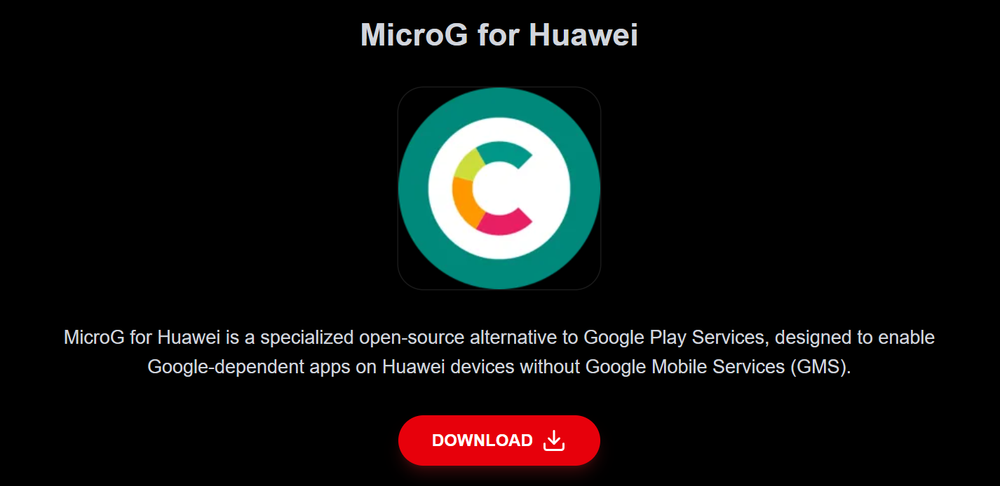

MicroG Services
A Google Services compatibility component often required by Morphe style apps.
Best used for
MicroG is an open-source implementation of Google Play services, which allows applications that rely on Google Play Services to function without needing to install the official Google services.
Compatibility note
Exact behaviour may vary by BYD model, software version and region. Test while parked before relying on the app.
How to install
Obtain the APK from a trusted source and keep a record of the version you are installing. For this, you'd be using a variation of MicroG for Huawei devices that fits the same Google service restriction profile as the BYD multimedia system. Go to the Vanced website and download the latest version of MicroG. Click the red button "MicroG for Huawei" to download.

Transfer the APK to the BYD head unit using your preferred method, such as USB storage or local file access. I personally prefer to install Telegram on my BYD head unit, and download the file that I have sent to myself under "Saved Messages".
Open the APK from the vehicle file manager or installer utility.
Allow installation from unknown sources only when prompted and only for the installer you trust.
Launch the app while parked, then proceed with initial set up.
Disable or Uncheck "Device Registration with Google".
Click on "Add Google Account", then follow the on-screen instructions to login to your Google account.
Return to your Home screen, open "Disable Autostart" app, and de-select (set to OFF) MicroG Services. This will allow MicroG services to be turned on as soon as your BYD head unit starts up every time you start up the car.
Usage tips
Keep the APK version documented so you can roll back if a newer version breaks compatibility.
Avoid signing in with sensitive accounts unless you trust the source and understand the privacy implications.
Do not interact with media or navigation settings while driving.
This repository is a guidance directory. It does not host APK files and does not guarantee APK integrity, legality, compatibility or safety. Verify sources before installing or distributing files.